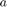

Práctica 2
Contents
- Guerrero Aguilar Luis Abraham
- Durán Espino Rodrigo Baltazar
- López Casas Leonel Isaac
- Tuda Alonzo Roberto
Objetivos
- Manipulación Básica de MATLAB
- Gráficas de Señales Reales y Complejas Continuas
- Transformación de Señales Continuas(escalamientos y translaciones)
- Calculo de energía y potencia de señales continuas
Introducción
En 1984 surge la primera versión, creado por Cleve Moler, con la idea de usar paquetes de subrutinas escritas en Fortran en los cursos de Análisis Numérico y Algebra Lineal, sin tener una necesidad de programas que usaran este lenguaje. El lenguaje de programación M se creó en 1970 proporcionando un acceso sencillo al Software de matrices LINPACK y EISPACK sin tener que hacer uso del lenguaje Fortran. Ya en 2004 se apreciaba que MATLAB era usado por aproximadamente más de un millón de personas, tanto académicos como empresarios.
Alternativas de software libre para usar código MATLAB
- GNU Octave Online : Octave o GNU Octave es un programa y lenguaje de programación para realizar cálculos numéricos. Como su nombre indica, Octave es parte del proyecto GNU. Es considerado el equivalente libre de MATLAB. Entre varias características que comparten, se puede destacar que ambos ofrecen un intérprete, permitiendo ejecutar órdenes en modo interactivo
- Scilab : Es un software gratuito de código abierto para programación numérica que proporciona un entorno para aplicaciones de ingeniería y científicas muy similar a MATLAB. Es un lenguaje de programación matemática de alto nivel con acceso a cientos de funciones, estructuras de datos avanzadas y funciones gráficas en 2D y 3D.
- Sagemath : Es otro sistema de software de matemáticas de código abierto que podría ser una buena opción para aquellos que buscan una alternativa de MATLAB. Está construido sobre una variedad de conocidas bibliotecas de computación científica basadas en Python, y su propio lenguaje es sintácticamente similar a Python. Tiene muchas características que incluyen una interfaz de línea de comandos, cuadernos basados en navegador, herramientas para incrustar fórmulas en otros documentos y, por supuesto, muchas bibliotecas matemáticas.
- Links
Desarrollo
Se resolveran cada uno de los siguientes problemas,los cuales se expondran con su respectiva sección.
- Crea una función que se llame fun1 y reciba dos parametros y  la función debe regresar la evaluación , esta función debe trabajr con y . Debe mostrar su código en el reporte (sin ejecutar).
- Construya una función que gráfique funciones de en el formato de su elección y pruebe su código mostrando la gráfica de vs en el intervalo para .
- Construya una función que gráfique funciones de en el formato de su elección y pruebe su código mostrando la gráfica de la transformada de Fourier en de la función , puede utilizar una función anonima para este fin. Reporte la gráfica de de (recuerde que ya tiene una función para esto). Reporte del espectro de magnitud y del espectro de fase en (puedes con sultar con help la descripción de abs, angle, atan2). Solo reporte las graficas.
- Realiza las mismas operaciones que Lathi en las secciones M1.1 a M1.4 que se encuentra al final del capítulo 1 y antes de la sección de problemas, cambie los inline por funciones anonimas
- Resuelve el problema 1.2.2 usando las herramientas del paso anterior.
- Escriba una función que se llame energia que reciba como argumento una función (anonima o simbolica) y que regrese el calculo de la energía, para esto puede resultar útil investigar las instrucciones int , integral Se presupone utilizar el código solo con funciones de energia. Muestre el código sin ejecutar, y posteriormente resuelva el problema 1.1.3.
- Escriba una función que se llame potencia que reciba como argumento una función (anonima o simbolica) y que regrese el calculo de la potencia para esto puede resultar útil investigar las instrucciones int , integral Se presupone utilizar el código solo con funciones de potencia. Muestre el código sin ejecutar, y posteriormente resuelva el problema 1.1.4.
Problema1(solo codigo)
%function [r]=fun1(a,w) %r=a./(a.^2+w.^2) %end
Problema2
y=fun1(1,-2:0.01:2); t=-2:0.01:2; plot(t,y)
Undefined function 'fun1' for input arguments of type 'double'. Error in Practica2 (line 95) y=fun1(1,-2:0.01:2);
Problema4
Ejercicio M1.1 de LATHI
%Cambiando función 'inline' a funciones anonimas nos queda: %f=@(t) (exp(-t).*cos(2*pi*t)); % %Evaluando la función con $t=0$: % t=0; x=exp(-t).*cos(2*pi*t) % %Evaluando la función con un intervalo de t=-2:2: % t=-2:2; y=exp(-t).*cos(2*pi*t) % %Ahora vamos a evuar la función con el mismo intervalo pero le diremos a la %función que tome pasos de 0.01 para que se pueda mostrar de mejor forma %como se comporta la funcón. Entonces nos queda: t=-2:0.01:2; z=exp(-t).*cos(2*pi*t); plot(t,z) %
Ejercicio M1.2 de LATHI
%Para resolver este problema se realiza casi de la misma manera que el %anterior. %Para la primera parte del problema nos queda: % u=@(t) t>=0; t=-2:2; y=(t>=0); plot(t,y) xlabel('t'); ylabel('u(t)');
%Para la segunda tomaremos mas valores entre el intervalo de -2 a 2 para %que se pueda reflejar mejor la función: t=-2:0.01:2; y=(t>=0); plot(t,y) xlabel('t'); ylabel('u(t)'); axis ([-2 2 -0.1 1.1])
%Para la tercera parte del ejercicio igual se modifica la función inline %por la función anonima y se realiza lo que se nos pide, el resultado es: % u=@(t) (t>=0 & (t<1)); t=-1:0.01:2; y=(t>=0 & t<1); plot(t,y) xlabel('t'); ylabel('u(t)=u(t)-u(t-1)'); axis([-1 2 -0.1 1.1]);
Ejercicio M1.3 de LATHI
%Para este ejercicio se convierten diferentes funciones a las que el libro %muestra para tener una mejor visualización del codigo y modificar la %función inline en la función anonima. % g=@(t) (exp(-t).*cos(2*pi*t).*(t>=0)); t=-2:0.01:2; y=2*(exp(-t).*cos(2*pi*t).*(t>=0))+1; plot(t,y) xlabel('t'); ylabel('g(2t+1)'); grid; % %Ahora g(t) la graficaremos con g(-t+1). Como observamos todos los %valores de t cambian de signo. % g=@(t) (exp(-t).*cos(2*pi*t).*(t>=0)); t=-2:0.01:2; y=(exp(t).*cos(2*pi*-t).*(-t>=0))+1; plot(t,y) xlabel('t'); ylabel('g(-t+1)'); grid;
%Ahora sumaremos las dos funciones anteriores y el resultado es el %siguiente. g=@(t) (exp(-t).*cos(2*pi*t).*(t>=0)); t=-2:0.001:2; y1=2*(exp(-t).*cos(2*pi*t).*(t>=0))+1; y2=(exp(t).*cos(2*pi*-t).*(-t>=0))+1; h=y1+y2; plot(t,h) xlabel('t'); ylabel('h(t)'); grid;
Ejercicio M1.4 de LATHI
%La representación del código de este ejercicio es el siguiente.
f=@(t) (exp(-t).*((t>=0 & (t<1))));
t=0:0.01:1;
x=exp(-t).*((t>=0 & (t<1)));
E_x=sum(x.*x.*0.01)
Problema5
%Para este problema 1.2.2 de LATHI primero realizaremos el código de la %señal original para depués irla modificando conforme lo va pidiendo el %problema. % %Grafica x(t) original. % f=@(t) (-t.*(t>=-4 & t<0)); f1=@(t) (t.*(t>=0 & t<2)); t=-5:0.01:3; y=f(t)+f1(t); plot(t,y) title('x(t)'); xlabel('t'); axis([-5 3 -0.5 4.5]);
%Para el inciso a) x(t) debe convertirse en x(t-4). % f=@(t) (-t.*(t>=-4 & t<0)); f1=@(t) (t.*(t>=0 & t<2)); t=-5:0.01:7; y=f(t-4)+f1(t-4); plot(t,y) title('x(t-4)'); xlabel('t'); axis([-0.5 6.5 -0.5 4.5]);
%Para el inciso b) x(t) debe convertirse en x(t/1.5). % f=@(t) (-t.*(t>=-4 & t<0)); f1=@(t) (t.*(t>=0 & t<2)); t=-10:0.01:7; y=f(t/1.5)+f1(t/1.5); plot(t,y) title('x(t/1.5)'); xlabel('t'); axis([-8 5 -0.5 4.5]);
%Para el inciso c) x(t) debe convertirse en x(-t). % f=@(t) (-t.*(t>=-4 & t<0)); f1=@(t) (t.*(t>=0 & t<2)); t=-10:0.01:7; y=f(-1*t)+f1(-1*t); plot(t,y) title('x(-t)'); xlabel('t'); axis([-4 5 -0.5 4.5]);
%Para el inciso d) x(t) debe convertirse en x(2t-4). % f=@(t) (-t.*(t>=-4 & t<0)); f1=@(t) (t.*(t>=0 & t<2)); t=-10:0.01:7; y=f(2*t-4)+f1(2*t-4); plot(t,y) title('x(2t-4)'); xlabel('t'); axis([-4 5 -0.5 4.5]);
%Para el inciso e) x(t) debe convertirse en x(2-t). % f=@(t) (-t.*(t>=-4 & t<0)); f1=@(t) (t.*(t>=0 & t<2)); t=-10:0.01:7; y=f(2-t)+f1(2-t); plot(t,y) title('x(2-t)'); xlabel('t'); axis([-2 7 -0.5 6.5]);